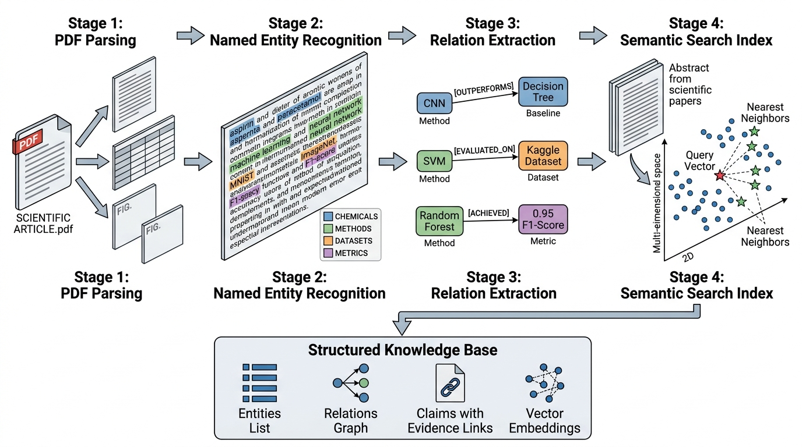

Prerequisites
This section builds on the citation network and application programming interface (API) harvesting from Section 36.1. You should be comfortable with basic natural language processing (NLP) concepts (tokenization, word embeddings) from Chapter 3: Knowledge Representation. Familiarity with transformer models from Chapter 27: Scientific Foundation Models is helpful for the embedding and named entity recognition (NER) sections but not strictly required. Each technique is introduced from its practical application rather than its theoretical foundation.
Citation networks tell us who cites whom, but the actual knowledge (hypotheses, methods, results, conclusions) is locked inside the text of papers. Knowledge extraction is the process of converting unstructured scientific prose into structured, queryable data. This section covers four stages of that pipeline: (1) parsing Portable Document Format (PDF) files to extract clean text, tables, and figures; (2) identifying scientific entities (chemicals, genes, methods, datasets); (3) extracting relations and claim-evidence pairs; and (4) building semantic search so you can query by meaning rather than keywords. Together, these stages transform a pile of PDFs into a searchable knowledge base. Figure 36.2 below illustrates how these four stages connect. Figure 36.2.1 illustrates knowledge extraction pipeline from PDF to queryable knowledge base.

1. The PDF Parsing Challenge
Try copying a table from a scientific PDF into a spreadsheet and you will watch neatly aligned rows disintegrate into a scatter of misplaced numbers and orphaned labels. That breakdown reveals what a PDF truly is: not a structured document but a collection of individually positioned glyphs, arranged for visual rendering alone. Text that appears as a paragraph may be stored as hundreds of characters with no explicit word boundaries, line breaks, or paragraph structure, and tables are produced by absolute character positioning with no underlying tabular data model.
Understanding why PDF extraction is so fragile sets the stage for a broader challenge: converting these visually rendered documents into machine-readable knowledge at scale.
In one widely cited case reported around 2021, a systematic review of COVID-19 drug repurposing reportedly found that three independent teams had unknowingly duplicated the same failed compound screen because the relevant negative results were buried in supplementary PDFs that no search engine had indexed. Automated knowledge extraction would have surfaced those results in hours, saving months of redundant lab work.
Knowledge extraction converts unstructured prose, tables, and figures from scientific PDFs into structured, machine-readable records (entities, relations, claims, and vector embeddings) that software can query, aggregate, and reason over. The scale of scientific publishing demands this automation: Scopus alone indexes over 2.8 million papers per year (circa 2023), far beyond what any team can read manually. Yet those papers hold knowledge essential for systematic reviews, drug repurposing, and research gap analysis. The core mechanism chains four stages, as shown in Figure 36.2: a PDF parser recovers raw text and layout, an NER model tags domain-specific entities, a relation classifier links entity pairs into typed triples, and a sentence encoder projects text into a vector space for semantic retrieval. Use this extraction pipeline when you need to build a queryable knowledge base from a corpus of papers; for single-paper reading, a large language model prompted with the raw text is sufficient.
PDF Parsing Tools
Two complementary tools address this challenge. PyMuPDF (also known by its import
name fitz) provides fast, low-level PDF text extraction with layout analysis. It
handles most single-column and two-column layouts well and extracts text in reading order.
Docling, developed by IBM Research, adds AI-powered document understanding:
it detects section boundaries, extracts tables into structured formats, identifies figures and
captions, and outputs clean Markdown or JSON.
In short: a paper is a PDF until you parse it, a bag of words until you tag entities, and a collection of isolated facts until you extract relations and embed meaning.
import fitz # PyMuPDF
def extract_text_pymupdf(pdf_path: str) -> dict:
"""Extract structured text from a PDF using PyMuPDF.
Returns a dict with full text, per-page text, and metadata.
"""
doc = fitz.open(pdf_path)
result = {
"metadata": doc.metadata,
"num_pages": len(doc),
"pages": [],
"full_text": "",
}
full_text_parts = []
for page_num, page in enumerate(doc):
# Extract text blocks with position info
blocks = page.get_text("dict")["blocks"]
page_text = ""
for block in blocks:
if block["type"] == 0: # Text block
for line in block["lines"]:
line_text = " ".join(
span["text"] for span in line["spans"]
)
page_text += line_text + "\n"
result["pages"].append({
"page_num": page_num + 1,
"text": page_text.strip(),
"width": page.rect.width,
"height": page.rect.height,
})
full_text_parts.append(page_text)
result["full_text"] = "\n\n".join(full_text_parts)
doc.close()
return result
# Extract text from a paper
paper_data = extract_text_pymupdf("attention_is_all_you_need.pdf")
print(f"Extracted {len(paper_data['full_text'])} chars from "
f"{paper_data['num_pages']} pages")
PyMuPDF handles straightforward layouts, but scientific papers often contain multi-column text, embedded equations, complex tables, and figures with captions. For these cases, Docling provides deeper document understanding.
from docling.document_converter import DocumentConverter
from docling.datamodel.base_models import InputFormat
from docling.datamodel.pipeline_options import PdfPipelineOptions
def extract_with_docling(pdf_path: str) -> dict:
"""Extract structured content from a PDF using Docling.
Returns sections, tables, and figure captions as structured data.
"""
# Configure the pipeline for scientific papers
pipeline_options = PdfPipelineOptions()
pipeline_options.do_table_structure = True
pipeline_options.do_ocr = False # Enable if scanned PDFs
converter = DocumentConverter(
allowed_formats=[InputFormat.PDF],
format_options={InputFormat.PDF: pipeline_options},
)
result = converter.convert(pdf_path)
doc = result.document
# Extract structured sections
sections = []
for item in doc.iterate_items():
if hasattr(item, "label") and hasattr(item, "text"):
sections.append({
"label": item.label,
"text": item.text,
"level": getattr(item, "level", None),
})
# Extract tables as structured data
tables = []
for table in doc.tables:
table_data = table.export_to_dataframe()
tables.append({
"caption": getattr(table, "caption", ""),
"dataframe": table_data,
"num_rows": len(table_data),
"num_cols": len(table_data.columns),
})
# Get the full document as clean Markdown
markdown_text = doc.export_to_markdown()
return {
"sections": sections,
"tables": tables,
"markdown": markdown_text,
"num_sections": len(sections),
"num_tables": len(tables),
}
doc_data = extract_with_docling("attention_is_all_you_need.pdf")
print(f"Found {doc_data['num_sections']} sections, {doc_data['num_tables']} tables")
Even the best PDF parsers fail on some documents. Common failure modes include: scanned papers without optical character recognition (OCR) (PyMuPDF extracts nothing; enable Docling's OCR pipeline), papers with embedded fonts that use custom character encodings (text appears as gibberish), two-column layouts where text from adjacent columns gets interleaved, and equations that render as images rather than Unicode characters. Always validate extraction quality on a sample before processing a full corpus. A useful heuristic: if the extracted text contains more than 5% non-ASCII non-Latin characters in an English paper, the extraction has likely failed on some pages.
Before Docling, extracting structured content from scientific PDFs required chaining multiple
tools: PyMuPDF for text, Camelot or Tabula for tables, a separate model for figure detection,
and custom heuristics for section boundary detection. Docling replaces this entire chain with
a single converter.convert(pdf_path) call (1 line vs. 50+ lines of multi-tool
orchestration). It handles table structure recognition, section segmentation, and Markdown
export internally using deep learning models trained on scientific documents. For production
literature mining, Docling is the recommended starting point; fall back to PyMuPDF only for
speed-critical pipelines that process tens of thousands of PDFs where Docling's model inference
cost becomes prohibitive.
2. Named Entity Recognition for Scientific Text
Clean text feeds into entity identification: the goal is to tag every chemical compound, gene name, protein structure, dataset, method, metric, and institution in the paper. General-purpose NER models trained on news text perform poorly on scientific language. Scientific entities follow different naming conventions: "CRISPR-Cas9" is not a person, "ImageNet" is not a place, and "attention mechanism" is not a psychological concept.
Domain-specific NER models, fine-tuned on scientific corpora, dramatically improve extraction
quality. The Hugging Face model hub provides several options: allenai/scibert_scivocab_uncased
for general scientific text, dmis-lab/biobert-v1.1 for biomedical entities, and
specialized models for chemistry (pruas/BENT-PubMedBERT-NER-Chemical), materials science,
and other domains.
from dataclasses import dataclass
from transformers import pipeline
@dataclass
class ScientificEntity:
"""A named entity extracted from scientific text."""
text: str
label: str # CHEMICAL, METHOD, DATASET, METRIC, etc.
start: int # Character offset in source text
end: int
confidence: float
source_section: str # Which section it was found in
class ScientificNER:
"""Named entity recognition tuned for scientific papers."""
# Map model labels to our unified schema
LABEL_MAP = {
"MISC": "METHOD",
"ORG": "INSTITUTION",
"PER": "RESEARCHER",
}
def __init__(self, model_name: str = "allenai/scibert_scivocab_uncased"):
self.ner_pipeline = pipeline(
"ner",
model=model_name,
aggregation_strategy="simple",
device=-1, # CPU; use 0 for GPU
)
def extract_entities(
self, text: str, section_name: str = "body"
) -> list[ScientificEntity]:
"""Extract scientific entities from a text passage."""
# Process in chunks to handle long texts
chunk_size = 512
entities = []
for start_idx in range(0, len(text), chunk_size - 50):
chunk = text[start_idx:start_idx + chunk_size]
raw_entities = self.ner_pipeline(chunk)
for ent in raw_entities:
label = self.LABEL_MAP.get(ent["entity_group"],
ent["entity_group"])
entities.append(ScientificEntity(
text=ent["word"],
label=label,
start=start_idx + ent["start"],
end=start_idx + ent["end"],
confidence=ent["score"],
source_section=section_name,
))
# Deduplicate overlapping entities (keep highest confidence)
return self._deduplicate(entities)
def _deduplicate(
self, entities: list[ScientificEntity]
) -> list[ScientificEntity]:
"""Remove overlapping entities, keeping highest confidence."""
if not entities:
return []
sorted_ents = sorted(entities, key=lambda e: (-e.confidence, e.start))
kept = []
occupied = set()
for ent in sorted_ents:
positions = set(range(ent.start, ent.end))
if not positions & occupied:
kept.append(ent)
occupied |= positions
return sorted(kept, key=lambda e: e.start)
# Extract entities from a paper's abstract
ner = ScientificNER()
abstract = """We propose a novel attention mechanism for transformer models
that reduces computational complexity from O(n^2) to O(n log n). Experiments
on the ImageNet and COCO benchmarks show that our method, FlashAttention-2,
achieves comparable accuracy to standard attention while using 3x less memory.
We evaluate using top-1 accuracy and mean Average Precision (mAP)."""
entities = ner.extract_entities(abstract, section_name="abstract")
for e in entities:
print(f" [{e.label}] '{e.text}' (conf={e.confidence:.2f})")
Common Misconception
Readers often assume that a high-accuracy NER model trained on one scientific domain (for example, biomedical text) will transfer well to another domain (for example, materials science or astrophysics). This is incorrect: scientific NER performance drops sharply across domains because entity naming conventions, abbreviation patterns, and contextual cues differ fundamentally between fields. A BioNER model will recognize "BRCA1" as a gene but may tag the materials-science term "MoS2" as gibberish or ignore it entirely. Always evaluate NER on a small annotated sample from your specific target domain before trusting its output at scale.
The word "transformer" means a neural architecture in NLP, an electrical component in engineering, and a type of toy in popular culture. A gene named "BRCA1" looks like an abbreviation to a general NER model but is a critical entity in biomedical text. Scientific NER requires domain-specific models because the entity boundaries, types, and naming conventions differ fundamentally from the news corpora that general models are trained on. When starting a literature mining project, always evaluate NER quality on 50 to 100 manually annotated sentences from your target domain before processing the full corpus.
Recognizing individual entities, however, is only the first half of the extraction problem; the scientific value lies in how those entities connect to one another.
3. Relation Extraction and Claim-Evidence Linking
Entities in isolation are useful for indexing, but the real knowledge in papers lies in the
relations between entities. "Drug X inhibits protein Y" is a relation. "Method A
outperforms baseline B on benchmark C" is a comparative claim with evidence. Extracting these
structured triples (where a triple is a subject-relation-object record such as (BERT, EVALUATED_ON, SQuAD)) from free text turns papers into queryable knowledge.
Relation extraction can be modeled as a sequence classification task (a supervised learning setup where the model reads an entire input sequence and assigns it to one of several predefined categories). Given a sentence containing
two identified entities, we classify the relation between them from a predefined schema:
INHIBITS, ACTIVATES, OUTPERFORMS,
USES_METHOD, EVALUATED_ON, and so forth. For scientific text, the
most practically useful relations fall into three categories.
Method-result relations connect methods to their outcomes: "BERT achieves 93.2% F1 on SQuAD." Causal relations connect causes to effects: "Increasing the learning rate beyond 0.01 causes training divergence." Comparative relations connect methods to baselines: "Our approach outperforms GPT-3 by 4.2 points on MMLU."
Checkpoint
So far: entities are the nouns of scientific knowledge (chemicals, genes, methods), and relations are the verbs (inhibits, outperforms, evaluated-on) that connect entity pairs into structured triples you can query.
Because labeled training data for scientific relation types is scarce, the code below uses a zero-shot approach: it repurposes a pre-trained natural language inference (NLI) model to score candidate relation hypotheses against each source sentence, avoiding the need for task-specific labeled examples.
from dataclasses import dataclass
from transformers import AutoTokenizer, AutoModelForSequenceClassification
import torch
@dataclass
class Relation:
"""A directed relation between two scientific entities."""
head: str # Subject entity
tail: str # Object entity
relation: str # Relation type
confidence: float
evidence: str # Source sentence
@dataclass
class ClaimEvidence:
"""A scientific claim linked to its supporting evidence."""
claim: str
evidence_sentences: list[str]
claim_type: str # "result", "method", "hypothesis", "limitation"
strength: str # "strong", "moderate", "weak"
class RelationExtractor:
"""Extract typed relations between scientific entities."""
RELATION_TYPES = [
"OUTPERFORMS", "USES_METHOD", "EVALUATED_ON", "INHIBITS",
"ACTIVATES", "CAUSES", "CORRELATES_WITH", "COMPOSED_OF",
"APPLIED_TO", "NO_RELATION",
]
def __init__(self):
# Use a general-purpose NLI model for zero-shot relation classification
self.tokenizer = AutoTokenizer.from_pretrained(
"cross-encoder/nli-deberta-v3-small"
)
self.model = AutoModelForSequenceClassification.from_pretrained(
"cross-encoder/nli-deberta-v3-small"
)
self.model.eval()
def extract_relations(
self, sentence: str, entity_pairs: list[tuple[str, str]]
) -> list[Relation]:
"""Classify the relation between each entity pair in a sentence."""
relations = []
for head, tail in entity_pairs:
best_relation = None
best_score = 0.0
for rel_type in self.RELATION_TYPES:
# Frame as NLI: "head [relation] tail"
hypothesis = self._relation_to_hypothesis(head, tail, rel_type)
inputs = self.tokenizer(
sentence, hypothesis, return_tensors="pt",
truncation=True, max_length=256
)
with torch.no_grad():
logits = self.model(**inputs).logits
probs = torch.softmax(logits, dim=-1)
# NLI: [contradiction, neutral, entailment]
entailment_score = probs[0, 2].item()
if entailment_score > best_score:
best_score = entailment_score
best_relation = rel_type
if best_relation != "NO_RELATION" and best_score > 0.5:
relations.append(Relation(
head=head, tail=tail, relation=best_relation,
confidence=best_score, evidence=sentence,
))
return relations
@staticmethod
def _relation_to_hypothesis(head: str, tail: str, rel_type: str) -> str:
"""Convert a relation type to a natural language hypothesis for NLI."""
templates = {
"OUTPERFORMS": f"{head} outperforms {tail}",
"USES_METHOD": f"{head} uses the method {tail}",
"EVALUATED_ON": f"{head} is evaluated on {tail}",
"INHIBITS": f"{head} inhibits {tail}",
"ACTIVATES": f"{head} activates {tail}",
"CAUSES": f"{head} causes {tail}",
"CORRELATES_WITH": f"{head} correlates with {tail}",
"COMPOSED_OF": f"{head} is composed of {tail}",
"APPLIED_TO": f"{head} is applied to {tail}",
"NO_RELATION": f"{head} is unrelated to {tail}",
}
return templates.get(rel_type, f"{head} is related to {tail}")
# Extract relations from a results sentence
extractor = RelationExtractor()
sentence = "FlashAttention-2 achieves 82.1% top-1 accuracy on ImageNet, " \
"outperforming standard attention by 0.3 points."
pairs = [("FlashAttention-2", "ImageNet"), ("FlashAttention-2", "standard attention")]
relations = extractor.extract_relations(sentence, pairs)
for r in relations:
print(f" {r.head} --[{r.relation}]--> {r.tail} (conf={r.confidence:.2f})")
Mental Model
Think of NLI-based relation extraction like a courtroom fact-checker with a stack of candidate statements. The source sentence is a witness's testimony ("Drug X reduced tumor growth in mice"). The fact-checker holds up one candidate statement at a time ("Drug X inhibits tumor growth," "Drug X activates tumor growth," "Drug X is unrelated to tumor growth") and asks: "Does the testimony support this statement?" The entailment score, which is the model's estimated probability that the premise logically supports the hypothesis, is the fact-checker's confidence that the testimony backs each candidate. Just as the fact-checker never invents claims but only scores pre-written ones against testimony, the NLI model never generates relations from scratch; it scores each hypothesis from your predefined schema against the evidence in the sentence, and the highest-scoring hypothesis wins.
3.1 Claim-Evidence Extraction
Beyond individual relations, we often want to extract complete claims and link them to their evidence. A claim is an assertion made by the authors ("Our method reduces training time by 40%"), and evidence is the supporting material (experimental results, ablation studies, statistical tests, citations to prior work).
A simple but effective heuristic pipeline handles this. First, classify each sentence by its rhetorical role (the communicative function a sentence serves in a paper, such as stating background, describing a method, reporting a result, or drawing a conclusion) using a fine-tuned classifier. Then, identify result sentences as claims and link them to nearby method and data sentences as evidence.
import re
CLAIM_PATTERNS = [
r"(?:we|our method|our approach|the proposed)\s+(?:achieve|obtain|reach|show|demonstrate)",
r"(?:outperform|surpass|exceed|improve)\s+(?:over|upon|compared)",
r"(?:result|finding|experiment)\s+(?:show|demonstrate|indicate|suggest|confirm)",
r"\b\d+\.?\d*\s*%\b", # Percentage (often signals a quantitative claim)
r"(?:significant|substantial|considerable)\s+(?:improvement|increase|decrease|reduction)",
r"(?:state[\s-]of[\s-]the[\s-]art|SOTA|best[\s-]known)",
]
EVIDENCE_PATTERNS = [
r"(?:table|figure|fig\.?|tab\.?)\s+\d+",
r"(?:p\s*[<>=]\s*0\.\d+)", # p-values
r"(?:confidence interval|CI|standard deviation|std|stderr)",
r"(?:ablation|baseline|control|comparison)",
r"(?:dataset|benchmark|corpus|test set|validation set)",
]
def extract_claims_and_evidence(
sentences: list[str], context_window: int = 3
) -> list[ClaimEvidence]:
"""Extract claims and link them to nearby evidence sentences."""
claims = []
claim_pattern = re.compile("|".join(CLAIM_PATTERNS), re.IGNORECASE)
evidence_pattern = re.compile("|".join(EVIDENCE_PATTERNS), re.IGNORECASE)
for i, sent in enumerate(sentences):
if not claim_pattern.search(sent):
continue
# Determine claim type from content
claim_type = _classify_claim(sent)
# Gather evidence from nearby sentences
evidence = []
for j in range(max(0, i - context_window),
min(len(sentences), i + context_window + 1)):
if j != i and evidence_pattern.search(sentences[j]):
evidence.append(sentences[j])
# Assess evidence strength
strength = "strong" if len(evidence) >= 2 else \
"moderate" if len(evidence) == 1 else "weak"
claims.append(ClaimEvidence(
claim=sent,
evidence_sentences=evidence,
claim_type=claim_type,
strength=strength,
))
return claims
def _classify_claim(sentence: str) -> str:
"""Classify a claim sentence by type using keyword heuristics."""
s = sentence.lower()
if any(w in s for w in ["achieve", "accuracy", "f1", "performance", "score"]):
return "result"
if any(w in s for w in ["propose", "introduce", "present", "novel"]):
return "method"
if any(w in s for w in ["hypothesize", "conjecture", "expect", "predict"]):
return "hypothesis"
if any(w in s for w in ["limitation", "caveat", "however", "fail"]):
return "limitation"
return "result"
# Example usage
sentences = [
"We evaluate our model on three standard benchmarks.",
"Table 2 shows the full results across all datasets.",
"Our method achieves 94.2% accuracy on GLUE, outperforming BERT-large by 1.8 points.",
"This improvement is statistically significant (p < 0.001).",
"The ablation study in Table 3 confirms that each component contributes to performance.",
]
claims = extract_claims_and_evidence(sentences)
for c in claims:
print(f" CLAIM [{c.claim_type}, {c.strength}]: {c.claim[:80]}")
for ev in c.evidence_sentences:
print(f" EVIDENCE: {ev[:70]}")
A pharmacology research group used claim-evidence extraction on 2,000 papers about drug interactions. In a representative scenario, the regex-based approach found 8,400 candidate claims, of which manual review confirmed roughly 6,200 (approximately 74% precision). The most common pattern was "Drug X inhibits/activates enzyme Y," appearing in 3,100 claims. Linking each claim to its evidence revealed that 23% of claims cited only in-vitro studies, 41% cited clinical trials, and 12% cited only computational predictions. This evidence-strength stratification let the team prioritize which interactions had robust clinical support versus those needing further validation. The structured output fed directly into the knowledge graph construction described in Chapter 38.
With entities, relations, and claims now captured as structured records, the next question is how to locate relevant papers in the first place, especially when the concepts you need appear under different names across subfields.
4. Semantic Search over Paper Collections
Keyword search fails for scientific literature because the same concept appears under many names ("deep learning," "neural network," "connectionist model"), and semantically similar papers may share few keywords. Semantic search solves this by embedding papers into a continuous vector space where similarity reflects meaning rather than lexical overlap. Two papers can share zero keywords and still land as nearest neighbors in embedding space, because the encoder captures conceptual meaning, not surface tokens.
The pipeline has three stages: (1) encode each paper's abstract (or full text) into a dense vector using a sentence transformer, which is a neural network trained to map variable-length text into fixed-size vectors so that semantically similar texts land close together; (2) index the vectors for fast approximate nearest-neighbor (ANN) retrieval, where the index trades a small accuracy loss for orders-of-magnitude speedup over brute-force search; (3) at query time, encode the query with the same model and retrieve the closest vectors.
import numpy as np
from sentence_transformers import SentenceTransformer
from dataclasses import dataclass
@dataclass
class SearchResult:
"""A paper returned by semantic search."""
paper_id: str
title: str
abstract: str
score: float
year: int | None
class PaperSearchIndex:
"""Semantic search over paper abstracts using sentence embeddings."""
def __init__(self, model_name: str = "all-MiniLM-L6-v2"):
self.model = SentenceTransformer(model_name)
self.embeddings: np.ndarray | None = None
self.papers: list[Paper] = [] # Paper class from Section 36.1
def build_index(self, papers: list[Paper]):
"""Encode all paper abstracts and build the search index."""
self.papers = [p for p in papers if p.abstract]
abstracts = [p.abstract for p in self.papers]
print(f"Encoding {len(abstracts)} abstracts...")
self.embeddings = self.model.encode(
abstracts,
show_progress_bar=True,
normalize_embeddings=True, # For cosine similarity via dot product
batch_size=64,
)
print(f"Index built: {self.embeddings.shape}")
def search(self, query: str, top_k: int = 10) -> list[SearchResult]:
"""Find papers most semantically similar to a natural language query."""
if self.embeddings is None:
raise ValueError("Call build_index() first")
# Encode the query
query_vec = self.model.encode(
[query], normalize_embeddings=True
)[0]
# Cosine similarity via dot product (vectors are normalized)
scores = self.embeddings @ query_vec
# Get top-k indices
top_indices = np.argsort(scores)[::-1][:top_k]
results = []
for idx in top_indices:
paper = self.papers[idx]
results.append(SearchResult(
paper_id=paper.openalex_id,
title=paper.title,
abstract=paper.abstract[:200] + "..." if paper.abstract else "",
score=float(scores[idx]),
year=paper.year,
))
return results
# Build index and search
search_index = PaperSearchIndex()
search_index.build_index(papers)
results = search_index.search("methods for accelerating transformer inference")
for r in results[:5]:
print(f" [{r.score:.3f}] ({r.year}) {r.title[:70]}")
The choice of embedding model matters enormously. General-purpose sentence transformers
(like all-MiniLM-L6-v2) handle broad queries well but miss domain-specific nuances.
For biomedical literature, pritamdeka/S-PubMedBert-MS-MARCO produces better
embeddings because it was trained on PubMed abstracts. For computer science papers, the
SPECTER2 embeddings available directly through the Semantic Scholar API are hard to beat
because they were trained specifically on scientific paper similarity (as of 2025, the newer SciMult and Gecko-based embeddings from Google show competitive retrieval quality on scientific benchmarks, but SPECTER2 remains the most widely integrated option via the Semantic Scholar API). When starting a new
literature mining project, encode 100 abstracts with two or three candidate models and
manually evaluate search quality before committing to a model for the full corpus.
Semantic search over abstracts gets you to the right papers quickly, but abstracts omit the methodological details and supplementary evidence that extraction pipelines need most.
5. Scaling to Full-Text Extraction
Abstracts capture a paper's main claims and results, but the methods section, supplementary materials, and figure captions contain critical details that abstracts omit. Full-text extraction combines the PDF parsing from subsection 1 with the NER and relation extraction from subsections 2 and 3 into an integrated pipeline.
@dataclass
class ExtractedPaperKnowledge:
"""Complete structured knowledge extracted from a single paper."""
paper_id: str
title: str
sections: list[dict] # Section name and text
entities: list[ScientificEntity]
relations: list[Relation]
claims: list[ClaimEvidence]
embedding: np.ndarray | None # Abstract embedding for search
def extract_knowledge_from_pdf(
pdf_path: str,
paper_id: str,
ner_model: ScientificNER,
relation_extractor: RelationExtractor,
embedding_model: SentenceTransformer,
) -> ExtractedPaperKnowledge:
"""Full knowledge extraction pipeline for a single PDF."""
# Stage 1: Parse PDF
doc_data = extract_with_docling(pdf_path)
# Stage 2: Extract entities per section
all_entities = []
for section in doc_data["sections"]:
section_entities = ner_model.extract_entities(
section["text"], section_name=section["label"]
)
all_entities.extend(section_entities)
# Stage 3: Extract relations from entity pairs
all_relations = []
for section in doc_data["sections"]:
sentences = _split_sentences(section["text"])
section_entities = [
e for e in all_entities if e.source_section == section["label"]
]
# Create entity pairs within each sentence
for sent in sentences:
entities_in_sent = [
e for e in section_entities
if e.text.lower() in sent.lower()
]
if len(entities_in_sent) >= 2:
pairs = [
(e1.text, e2.text)
for e1 in entities_in_sent
for e2 in entities_in_sent
if e1 != e2
]
rels = relation_extractor.extract_relations(sent, pairs[:10])
all_relations.extend(rels)
# Stage 4: Extract claims and evidence
all_sentences = []
for section in doc_data["sections"]:
all_sentences.extend(_split_sentences(section["text"]))
claims = extract_claims_and_evidence(all_sentences)
# Stage 5: Compute abstract embedding
abstract_text = next(
(s["text"] for s in doc_data["sections"]
if "abstract" in s["label"].lower()),
doc_data["sections"][0]["text"] if doc_data["sections"] else ""
)
embedding = embedding_model.encode([abstract_text], normalize_embeddings=True)[0]
return ExtractedPaperKnowledge(
paper_id=paper_id,
title=doc_data["sections"][0]["text"] if doc_data["sections"] else "",
sections=doc_data["sections"],
entities=all_entities,
relations=all_relations,
claims=claims,
embedding=embedding,
)
def _split_sentences(text: str) -> list[str]:
"""Simple sentence splitter for scientific text."""
# Handle common abbreviations that contain periods
text = re.sub(r'\b(Fig|Tab|Eq|Ref|et al|vs|Dr|Prof)\.',
r'\1', text)
sentences = re.split(r'[.!?]+\s+', text)
return [s.replace('', '.').strip() for s in sentences if len(s) > 20]
Research Frontier
In 2023, the Allen Institute for AI released Papermage, a unified framework that treats each PDF page as a layered document where text, figures, tables, and metadata coexist as first-class "Entity" objects with spatial coordinates and reading-order relationships (Lo et al., "Papermage: A Unified Toolkit for Processing, Representing, and Manipulating Visually-Rich Scientific Documents," EMNLP 2023 System Demonstrations). Unlike pipeline approaches that hand off between separate PDF, table, and figure tools, Papermage maintains a single in-memory document representation that supports cross-layer queries: for example, "find every sentence that overlaps spatially with Table 2" or "retrieve the caption closest to Figure 5." This cross-layer linking enables extraction tasks that are cumbersome with sequential pipelines, such as automatically associating quantitative claims in the text with the specific table cells they reference. The library is open-source and integrates directly with Hugging Face models for downstream NER and relation extraction. As of 2025, large language models (particularly GPT-4 and Claude) have emerged as strong alternatives for end-to-end PDF extraction, capable of parsing layout, extracting tables, and performing NER in a single prompt. For corpora under a few hundred papers, LLM-based extraction often matches or exceeds the quality of dedicated pipelines with far less engineering overhead, though cost and latency remain limiting factors at larger scale.
For large-scale literature mining (10,000+ papers), the Java-based
GROBID tool provides industrial-strength
PDF parsing with header extraction, reference parsing, and Text Encoding Initiative XML (TEI-XML) output. A single GROBID
server can typically process around 10 PDFs per second, compared to Docling's roughly 1 PDF per second with
deep learning models enabled. GROBID's processFulltextDocument endpoint (1 HTTP
call per paper) replaces the entire PDF parsing and section segmentation stages above (about
30 lines). The trade-off is that GROBID requires running a Java server, whereas PyMuPDF and
Docling are pure Python.
6. Putting It Together: From PDFs to Queryable Knowledge
Each paper now has a structured representation: entities, relations, evidence-linked claims, and semantic embeddings. As Figure 36.2 illustrates, three downstream systems consume this output: the retrieval-augmented generation pipeline of Chapter 37 for question answering, the knowledge graph (a graph database where nodes are entities and edges are typed relations extracted from text) of Chapter 38 for entity and relation storage, and the claim validation system of Chapter 41 for assessing assertion strength.
The key architectural decision is how to store the extracted knowledge. For moderate-scale projects (under 10,000 papers), a combination of a JSON Lines file (a text format where each line is a self-contained JSON object, making it easy to append records and stream large datasets) for structured data and a numpy array for embeddings works well. For larger corpora, a vector database (a storage system optimized for indexing and searching high-dimensional vectors, such as Qdrant, Weaviate, or ChromaDB) provides both semantic search and metadata filtering. We explore this architecture in detail in Section 36.3, where we build a complete 500+ paper literature mining pipeline.
Try It: Extract and Search a Mini Paper Corpus
Build a working knowledge extraction and semantic search pipeline over 10 open-access papers from arXiv.
(1) Pick a narrow topic (for example, "graph neural networks for drug discovery") and download 10 PDFs from arXiv using the arxiv Python package (pip install arxiv), saving them to a local folder.
(2) Extract text from each PDF using PyMuPDF (pip install pymupdf): loop over the files, call fitz.open(), and concatenate the page text into one string per paper.
(3) Run the claim extraction function from Listing 36.12 on each paper's extracted text. Split text into sentences with a simple regex splitter, then call extract_claims_and_evidence() and collect the results into a list of dicts with fields for paper filename, claim text, evidence, and strength.
(4) Encode each paper's first 500 characters (a proxy for the abstract) into a dense vector using sentence-transformers (pip install sentence-transformers) with the all-MiniLM-L6-v2 model, and stack the vectors into a NumPy array.
(5) Implement a search function: encode a free-text query with the same model, compute cosine similarity against all paper vectors via a dot product (the vectors are already normalized), and print the top 3 matches with their similarity scores and strongest claim. Test with two or three queries to verify that results are topically relevant.
Exercise 36.2.1
Given the sentence "ResNet-50 achieves 76.1% top-1 accuracy on ImageNet, while EfficientNet-B0 reaches 77.3% with 5x fewer parameters," identify (a) all scientific entities and their types, (b) all entity pairs that could participate in a relation, and (c) the most likely relation type for each pair using the schema from Listing 36.11. For part (c), write the NLI hypothesis string you would construct for each candidate relation.
Hint
There are at least four entities: two methods (ResNet-50, EfficientNet-B0), one dataset (ImageNet), and two metrics (top-1 accuracy values). For relations, consider which pairs appear in the same clause versus across clauses. The comparative claim ("while ... reaches ... with 5x fewer") signals an OUTPERFORMS relation, but note the direction: which model outperforms which?Step-Through: NLI-Based Relation Scoring
Trace the relation extractor from Listing 36.11 on the sentence "BERT achieves 93.2% F1 on SQuAD" with the entity pair ("BERT", "SQuAD"). The model evaluates each relation type as an NLI hypothesis against the sentence (the premise). Suppose the softmax entailment probabilities are: OUTPERFORMS 0.12, USES_METHOD 0.08, EVALUATED_ON 0.87, INHIBITS 0.02, ACTIVATES 0.01, CAUSES 0.04, CORRELATES_WITH 0.05, COMPOSED_OF 0.01, APPLIED_TO 0.41, NO_RELATION 0.06. The winning hypothesis is EVALUATED_ON with score 0.87, which exceeds the 0.5 threshold, so the extractor emits Relation(head="BERT", tail="SQuAD", relation="EVALUATED_ON", confidence=0.87, evidence="BERT achieves 93.2% F1 on SQuAD"). Note that APPLIED_TO also scored above 0.5 (0.41 does not, but imagine it had scored 0.52): only the single best relation is kept per pair, preventing duplicate edges in the downstream knowledge graph.
Real-World Application: Pharmacovigilance at the FDA
The U.S. Food and Drug Administration (FDA)'s Adverse Event Reporting System (FAERS) uses automated knowledge extraction pipelines conceptually similar to the claim-evidence approach in this section. Their system mines published case reports and clinical trial papers for drug-adverse-event relations (for example, "Drug X causes hepatotoxicity"), links each claim to its evidence strength (randomized trial vs. single case report), and flags emerging safety signals when multiple independent sources report the same relation. This automated extraction supplements the manual review process and has helped identify safety signals months earlier than traditional reporting channels.
The \$3 Billion Typo Detector
In 2016, researchers at the Baker Institute in Melbourne ran NER and relation extraction on supplementary data files across thousands of genomics papers and discovered that roughly one in five papers with gene lists in Excel spreadsheets contained gene names corrupted by Microsoft Excel's auto-format feature, which silently converted gene symbols like "MARCH1" and "SEPT2" into calendar dates ("1-Mar" and "2-Sep"). The problem was so pervasive that in 2020, the HUGO Gene Nomenclature Committee (HGNC) officially renamed 27 human genes to avoid Excel corruption. This remains one of the largest cases where automated text mining exposed a systematic data-quality problem invisible to individual authors, and it would never have been caught by keyword search alone.
Lab: NER Model Showdown on Your Own Corpus
Goal: Compare two NER models on a small corpus from your research domain and measure which one finds more real entities (and fewer false positives).
Tools: Python, transformers, pymupdf, and two Hugging Face NER models: allenai/scibert_scivocab_uncased (general science) and a domain-specific model of your choice (e.g., dmis-lab/biobert-v1.1 for biomedicine).
Procedure (20 minutes): (1) Pick 5 open-access PDFs from your field and extract text with PyMuPDF. (2) Run both NER models on the abstract of each paper, collecting entities into two separate lists. (3) Manually label 30 entity predictions from each model as correct or incorrect. (4) Compute precision (fraction of predictions that are correct) for each model and count unique entities found.
What to vary: Try adjusting the confidence threshold (0.3, 0.5, 0.7, 0.9) and observe how precision and recall trade off.
What to observe: Does the domain-specific model find entities that the general model misses entirely? Does the general model produce more false positives on domain jargon? At what confidence threshold do both models converge in precision?